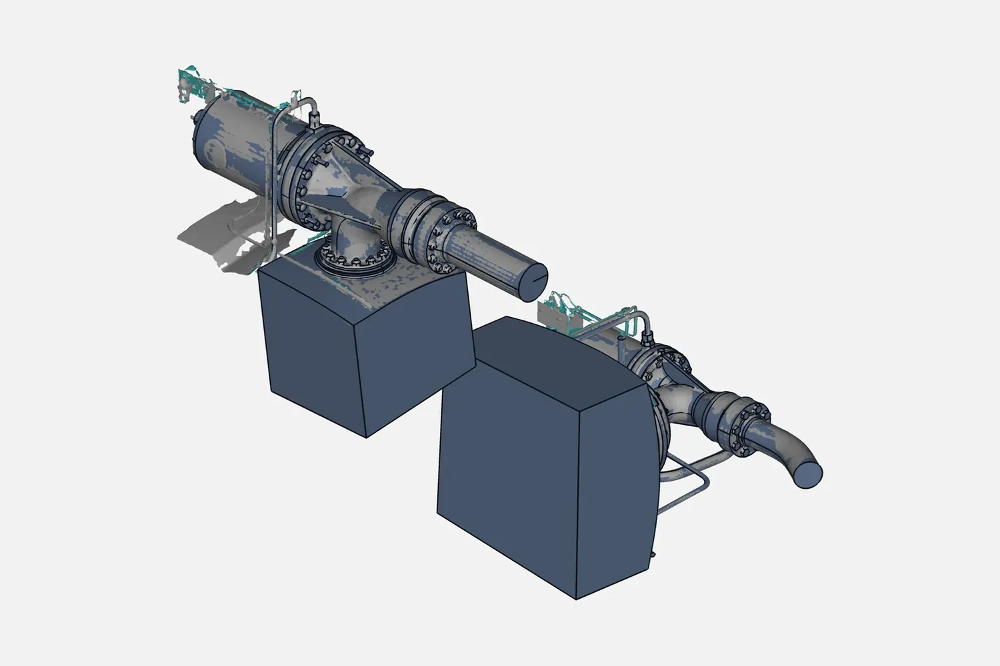

What you get
- A dimensioned 2D drawing of an existing part or a machine section, with datums and a note of what was measured and what was assumed.
- A STEP file you can open in your own CAD software.
- A deviation check: a colour map of the model against the scan.
- A wear-versus-design note: where the part had worn, and what shape we rebuilt.

Who is this for?
- Maintenance heads and plant owners with a stopped or ageing machine.
- Mills and process plants (textile, rice and flour, dairy and food, crushing and agri equipment) with spares that are no longer sold.
- Pump, valve and compressor repairers who are handed a worn sample and no drawing.
- Foundries and pattern shops that need a clean file before they make a pattern or core box.
- CNC and fabrication job shops whose customer gave them only a sample.
- Workshops in the UAE with imported machines whose maker no longer supports them.
The situations we hear, in your words
- "The supplier is not responding." Calls and emails go unanswered, or the reply is a long import wait.
- "The part is discontinued." The model is old, the spare is not made any more, and the drawing is in nobody's drawer.
- "We have no drawing, only the machine." Many parts, no folder, and a person who retired with the knowledge. A critical-spares drawing folder, built one part at a time, fixes this before the next breakdown.
- "The machine is down today." Tell us in the first message. We say what is needed to start and whether a photo is enough for a first answer.
- "I only have a sample and need a drawing to make 10 pieces." A drawing and STEP file from the sample is what your shop needs to quote and make a batch.
How it works
- Send a photo or the part. A photo of the part, the part it fits to, and the nameplate is enough for a first reply. We tell you if measuring is enough or if a scan is worth it. Sometimes the honest answer is "your shop can make this from a drawing."
- We confirm what can be captured. Parts with covered or internal passages need a conversation first. We say what we can and cannot capture before we start.
- Scan or measure. Small parts can be sent to our Coimbatore facility. Larger parts are scanned where they stand; ask us about on-site options. We take the mating part too, because a worn sample alone does not show which dimensions matter.
- Rebuild the intended shape. We build the model from the scan, following the design intent, not the wear. Hidden features the scan cannot reach are listed so you can check them on the real part.
- Deviation check. We compare the model to the scan and show you the result before you spend on making anything.
- Deliver, then you make. You get the drawing, the STEP file and the notes. Your shop, foundry or fabricator makes the part. If you like, we check the made part against the data.
What we need from you
- A photo of the part, of the part it fits to, and of the nameplate.
- Machine name, model, and where the part sits in the machine.
- What the part does, and why it failed, if you know.
- Approximate size and material, if you know them.
- The fit or tolerance you need, if you know it.
- How many pieces, and whether you will reorder.
- Your deadline. What a day of stopped machine costs you is a useful number to share, in your own words.

What you receive
| Deliverable | What it is for |
|---|---|
| 2D drawing with dimensions, datums, and a note of what is measured and what is assumed | Any machine shop or foundry can quote and make from it |
| STEP file (IGES or Parasolid on request) | Opens in your own CAD; CNC machining, casting patterns, fabrication, 3D printing |
| Deviation check (colour map of the model against the scan; PDF on request) | Shows how the model sits on the scan before anything is made |
| Wear-versus-design note | Shows where the part was worn and what shape we rebuilt, so the fit is your decision, not a guess |
| STL or PLY mesh (on request) | Reference and visual checks |
Fits and tolerances are agreed with you per part. Our inspection reports are normally delivered in 2 to 3 days; for a drawing and STEP rebuild we confirm the time after seeing the part and its mating part. We also offer CMM arm inspection for checking a made part. We quote per job and do not publish a price list. For our full process on a single part, see how we rebuild a spare part with no drawing.
What we can and cannot do
We can:
- Make a drawing and STEP file from an existing part or a machine section that you can bring or show us.
- Rebuild the intended shape of a worn part and tell you what we assumed.
- Compare the model against the scan, and a made part against the data.
We cannot, or will not claim to:
- Tell you the material or its heat treatment from a scan. State a material if you know it and we note it. Material identification is a separate test.
- Capture closed or covered internal passages, such as the inside of a closed impeller or a valve body, unless we have confirmed it for your part first. We tell you before we start.
- Promise a tolerance from a worn sample. A worn part is smaller than it was designed to be. We rebuild the intended shape and agree the fit with you.
- Survey a whole plant or building. This page covers a part or a machine section.
- Give a design approval or load calculation for the machine. We give geometry, not engineering sign-off.
- Make the part. Your shop, foundry or fabricator does that. We work with the one you already use.
A note on ownership
Before a part is scanned or rebuilt, make sure you own the design or are allowed to make the part. For your own old machine and your own spares, that is usually clear. If a patent or a supply agreement protects the part, or the drawing belongs to the maker under a contract, check the position first. We work for customers who own the part or may reproduce it, and we may ask you to confirm this. The CAD files we deliver to you are yours.
Part of a wider service
This page is one use of our 3D scanning services in India, and the same service is open to businesses in the UAE.
Send the part or a photo. Send a photo of the part and the part it fits to, and we tell you what is needed and give a written quote. Send the part or a photo or WhatsApp / call +91 95142 48525, info@vsharksolutions.com. Please say how you found us (what you typed in Google or where you saw us) so we can improve this page.
Last reviewed: